Diaphragm |
External oblique |
Gluteus maximus |
Gluteus medius |
Iliacus |
Iliocostalis cervicis |
Iliocostalis thoracis |
Internal oblique |
Latissimus dorsi |
Pectoralis major |
Pectoralis minor |
Psoas major |
Quadratus lumborum |
Rectus abdominis |
Rhomboid major |
Rhomboid minor |
Serratus anterior |
Transversus abdominis |
Trapezius
-------------------------------------------------------------------------------------------------------------------
Diaphragm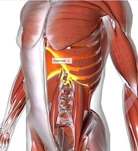 |
Meaning dia = across |
Function contraction = inhalation |
Originlower six ribs, |
Insertioncentral tendon |
spaceholder |
_________________________ | |||||
External oblique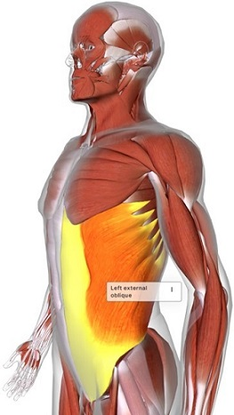 |
Meaningex = out of |
Functionrotate trunk, supports |
Originlower eight ribs |
Insertion iliac crest, rectus | |
_________________________ | |||||
Iliocostalis cervicis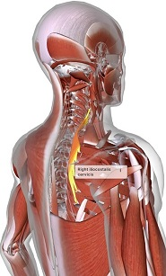 |
Meaningilium = groin of flank |
Functionextends, hyper-extends |
Originribs 3 - 6 |
Insertionvertebrae C4 - C6 | |
_________________________ | |||||
Iliocostalis thoracis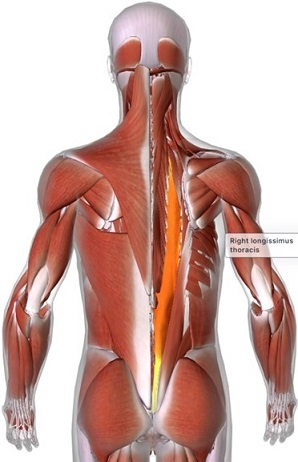 |
Meaningilium = groin of flank |
Functionextends & flexes spine |
Origin iliocostalis lumborum |
Insertionribs 1 - 6 & C7 | |
_________________________ | |||||
Internal oblique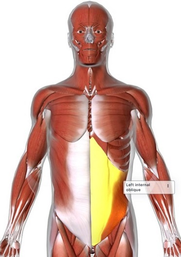 |
Meaninginternal = on inside |
Functionabducts and rotates |
Originlumbar fascia, groin |
Insertion pubic crest, pectineal
| |
_________________________ | |||||
Latissimus dorsi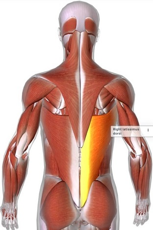 |
Meaninglatissimus = broadest |
Functionextents, adducts & |
Originlumbar fascia, iliac |
Insertionbicipital groove of humerus | |
_________________________ | |||||
Pectoralis major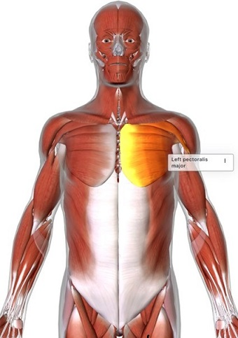 |
Meaningpectus = breast |
Functionflexes, adducts |
Origininner clavicle, outer |
Insertion bicipital humeral
| |
_________________________ | |||||
Pectoralis minor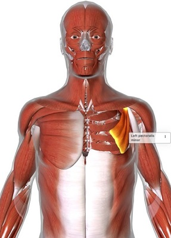 |
Meaningpectus = breeast |
Functionelevates 3rd - 5th rib (inhalation) |
Origin3rd, 4th & 5 |
Insertioncoracoid process (scapula) | |
_________________________ | |||||
Quadratus lumborum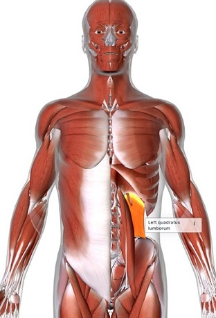 |
Meaningquadrus = square |
Functionflexes hip, and |
Origin iliac crest, iliolumbar |
Insertionlower border of 12thrib | |
_________________________ | |||||
Rectus abdominis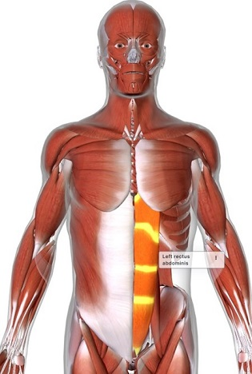 |
Meaningrectus = straight |
Functionflexes spinal column and |
Originpubic symphysis |
Insertionribs 5 - 7 and
| |
_________________________ | |||||
Rhomboid major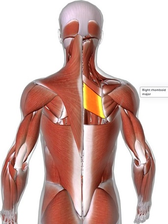 |
Meaningrhomboid = rhombus |
Functionretracts & rotate |
Originsupraspinous |
Insertionlower border of
| |
_________________________ | |||||
Rhomboid minor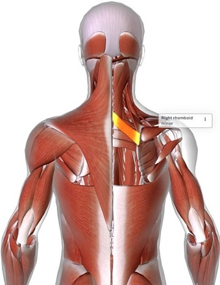 |
Meaningrhomboid = rhombus |
Functionretracts & rotate |
Origin nuchea and spines |
Insertionborder of scapula |
|
_________________________ | |||||
Serratus anterior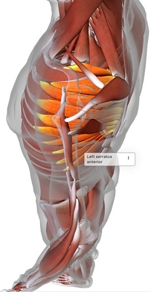 |
Meaningserratus = saw shaped |
Functionrotates & protracts |
Originexternal oblique, upper |
Insertioninner border of scapula | |
_________________________ | |||||
Transversus abdominis |
>Meaningtransversus = crosswise |
Functionsupports abdominal |
Originlumbar fascia, iliac |
Insertionfibrous tissue of
| |
_________________________ | |||||
Trapezius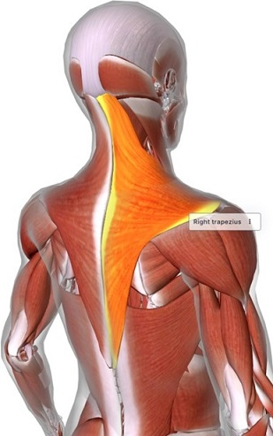 |
Meaningtrapezoid shaped |
Functionrotates, elevates |
Originnuchal line, back of |
Insertionclavicle, scapula & acromion | |
_________________________ | |||||
Psoas major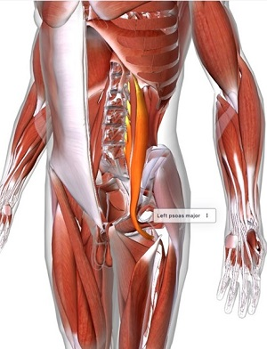 |
Meaningpsoas = muscle of the loin |
Functionflexes & rotates hip |
OriginL1-5, L1-5 & T12-L4 |
Insertionlower trochanter of femur | |
_________________________ | |||||
Iliacus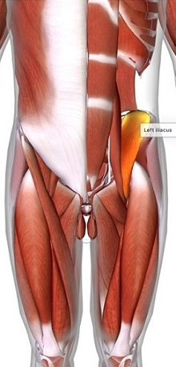 |
Meaningilium = flank or groin |
Functionflexes and externally |
Originiliac fossa |
Insertionlower trochanter of femur | |
_________________________ | |||||
Gluteus maximus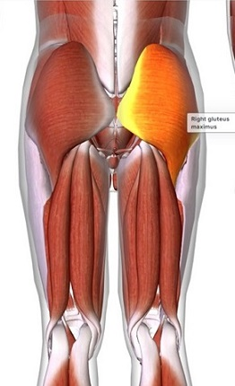 |
Meaninggloutos = the rump |
Functionextends & rotates hip |
Origincoccyx (tailbone), |
Insertion gluteal tuberosity
| |
_________________________ | |||||
Gluteus medius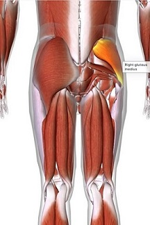 |
Meaninggloutos = the rump |
Functionabducts hip joint |
Originbetween back and |
Insertiontrocanter of femur |